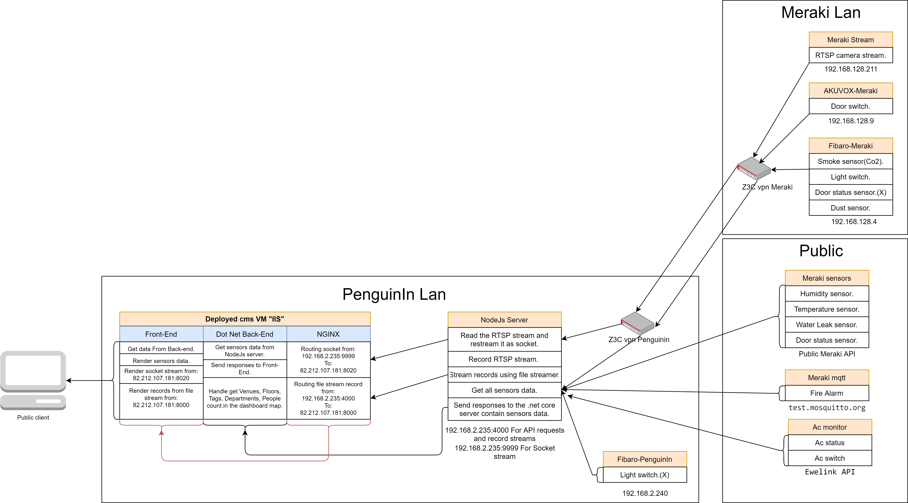

Home
Version: 1.1.0
Description
This is a web API server build with nodeJS to handle the RTSP streaming/recording and get/post from/to Meraki, Fibaro, SonOff and Akuvox sensors in CMS IOT solution.
MiddleWare
- 404.js: To handle the **Not Found** errors.
- 500.js: To handle the **Internal Server** errors.
- Timestamp.js: Add timestamp for each request.
- There are no middlewares for **Authentication/Authorization**.
Models
- This API doesnt have any **DB** models.
Network UML diagram
Routes "End-points"
Services
- Node server now have four main services:
1. RTSP stream and record camera videos.
2. Alert service.
3. Sound alarm “Mqtt” service.
4. Save historical data to CMS DB service.
- You can active or deactivate any service from the “.env” file by toggle state from true-false or you can start or stop services using node.js API.
Folders files tree
.
├── LICENSE // Mit license “must be change if we go to production”
├── README.md // Markdown file contain some information about project
├── docs // JSdoc container
├── index.js // Main server file
├── node_modules // Dependences container
├── package-lock.json
├── package.json // Run scripts, and identify the entry point to our package.
├── public // Static front-end file container
│ ├── index.html
│ ├── jsmpeg.js
│ ├── jsmpeg.min.js
│ └── styles.css
├── recorded_videos // Recorded videos container
│ └── 29-07-2021_15-13-30.mp4
├── src // Back-end JS files
│ ├── enum // Enumerators
│ ├── helpers // Helper functions
│ ├── lib // Installed and modified packages mainly for RTSP stream
│ ├── middleware // Middleware container
│ ├── router.js // API call handler “Callback a function when endpoint called”
│ ├── routerFunctionality // Function definition for router.js file
│ ├── server.js // Server configuration and start listening to port for server
│ └── services // Node.js services like RTSP stream and Alert service
└── views // Contain view “ejs” for data template “not used in this project”
└── index.ejs